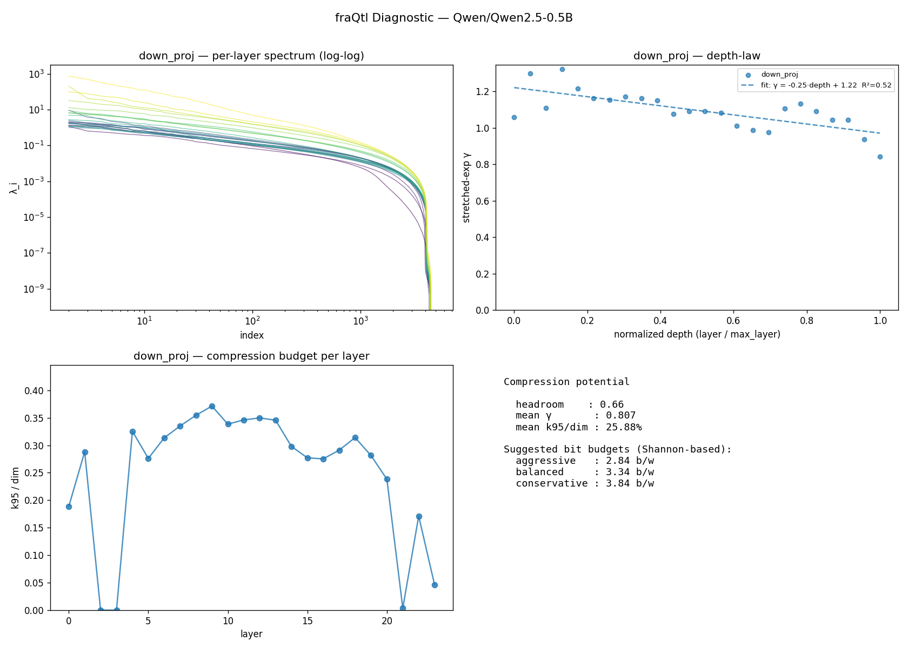

fraQtl Diagnostic — Qwen/Qwen2.5-0.5B
v0.1.0 ·
24 layers ·
projections: down_proj, o_proj ·
163.7s on cuda
moderate compression tolerated: suggested 3.3 b/w balanced, 2.8 b/w aggressive. mean k95/dim = 25.88%, mean γ = 0.807
Compression potential (Shannon-based)
| Metric | Value |
|---|
| Headroom score (0–1) | 0.662 |
| Mean γ (stretched-exp shape) | 0.807 |
| Mean k95 / dim | 25.88% |
| Suggested b/w (aggressive) | 2.84 |
| Suggested b/w (balanced) | 3.34 |
| Suggested b/w (conservative) | 3.84 |
Depth-law fits
| Projection | Slope | Intercept | R² | γ p10/p50/p90 | n |
|---|
| down_proj | -0.250 | 1.221 | 0.524 | 0.979 / 1.091 / 1.203 | 24 |
| o_proj | -0.254 | 0.644 | 0.305 | 0.355 / 0.510 / 0.691 | 24 |
Per-layer fingerprint (first 40)
| Layer | Proj | dim | γ | α_tail | k95 |
k99 | knee | best fit |
|---|
| 0 | down_proj | 4864 | 1.058 | 11.09 | 918 | 1423 | 1382 | stretched_exp |
| 0 | o_proj | 896 | 0.760 | 7.20 | 187 | 387 | 550 | stretched_exp |
| 1 | down_proj | 4864 | 1.299 | 9.97 | 1402 | 2197 | 2408 | stretched_exp |
| 1 | o_proj | 896 | 0.556 | 4.68 | 101 | 326 | 631 | stretched_exp |
| 2 | down_proj | 4864 | 1.109 | 7.00 | 1 | 1 | 2264 | stretched_exp |
| 2 | o_proj | 896 | 0.450 | 3.79 | 351 | 609 | 717 | stretched_exp |
| 3 | down_proj | 4864 | 1.321 | 7.95 | 1 | 66 | 2507 | stretched_exp |
| 3 | o_proj | 896 | 0.691 | 5.35 | 305 | 536 | 607 | stretched_exp |
| 4 | down_proj | 4864 | 1.216 | 9.12 | 1583 | 2471 | 2720 | stretched_exp |
| 4 | o_proj | 896 | 0.537 | 4.60 | 283 | 521 | 666 | stretched_exp |
| 5 | down_proj | 4864 | 1.162 | 9.24 | 1343 | 2246 | 2666 | stretched_exp |
| 5 | o_proj | 896 | 0.512 | 3.94 | 297 | 557 | 710 | stretched_exp |
| 6 | down_proj | 4864 | 1.154 | 9.02 | 1525 | 2441 | 2728 | stretched_exp |
| 6 | o_proj | 896 | 0.565 | 4.52 | 242 | 476 | 642 | stretched_exp |
| 7 | down_proj | 4864 | 1.173 | 8.87 | 1630 | 2552 | 2806 | stretched_exp |
| 7 | o_proj | 896 | 0.481 | 3.30 | 399 | 658 | 769 | stretched_exp |
| 8 | down_proj | 4864 | 1.161 | 8.55 | 1725 | 2652 | 2858 | stretched_exp |
| 8 | o_proj | 896 | 0.509 | 3.88 | 317 | 572 | 724 | stretched_exp |
| 9 | down_proj | 4864 | 1.150 | 8.22 | 1806 | 2734 | 2904 | stretched_exp |
| 9 | o_proj | 896 | 0.689 | 10.15 | 264 | 473 | 596 | stretched_exp |
| 10 | down_proj | 4864 | 1.076 | 8.08 | 1646 | 2611 | 2918 | stretched_exp |
| 10 | o_proj | 896 | 0.544 | 4.77 | 257 | 491 | 657 | stretched_exp |
| 11 | down_proj | 4864 | 1.091 | 7.90 | 1684 | 2667 | 2957 | stretched_exp |
| 11 | o_proj | 896 | 0.865 | 12.06 | 161 | 365 | 545 | stretched_exp |
| 12 | down_proj | 4864 | 1.090 | 7.99 | 1701 | 2662 | 2920 | stretched_exp |
| 12 | o_proj | 896 | 0.503 | 4.63 | 244 | 474 | 699 | stretched_exp |
| 13 | down_proj | 4864 | 1.081 | 8.00 | 1681 | 2645 | 2896 | stretched_exp |
| 13 | o_proj | 896 | 0.531 | 4.87 | 264 | 500 | 661 | stretched_exp |
| 14 | down_proj | 4864 | 1.012 | 8.19 | 1449 | 2440 | 2886 | stretched_exp |
| 14 | o_proj | 896 | 0.504 | 3.64 | 261 | 517 | 754 | stretched_exp |
| 15 | down_proj | 4864 | 0.986 | 8.25 | 1348 | 2348 | 2833 | stretched_exp |
| 15 | o_proj | 896 | 0.395 | 3.69 | 242 | 503 | 753 | stretched_exp |
| 16 | down_proj | 4864 | 0.975 | 8.46 | 1339 | 2316 | 2803 | stretched_exp |
| 16 | o_proj | 896 | 0.585 | 6.11 | 302 | 527 | 671 | stretched_exp |
| 17 | down_proj | 4864 | 1.106 | 8.80 | 1416 | 2352 | 2714 | stretched_exp |
| 17 | o_proj | 896 | 0.497 | 4.75 | 133 | 371 | 655 | stretched_exp |
| 18 | down_proj | 4864 | 1.132 | 8.76 | 1527 | 2465 | 2777 | stretched_exp |
| 18 | o_proj | 896 | 0.365 | 3.67 | 349 | 614 | 724 | stretched_exp |
| 19 | down_proj | 4864 | 1.090 | 8.84 | 1369 | 2308 | 2744 | stretched_exp |
| 19 | o_proj | 896 | 0.282 | 3.58 | 290 | 575 | 740 | stretched_exp |
Figures
(generate the PNG with report.to_png(path) — shown here if embedded)

About
This diagnostic measures information-theoretic compressibility from the input covariance
spectrum of each layer. It does not perform compression — it reports the ceiling and
shape. The fraQtl compression engine uses this fingerprint
plus additional engineering (sign correction, per-model calibration) to get closer to the
ceiling in practice.